The Galaxy Help Compiler
Overview of the Galaxy Help Compiler
The Galaxy Help Compiler is a translator and a linker that creates a help document set from help source files. The help compiler uses help project (.vhp) files to group help source files into help documents. (Help project files are similar to project files in many popular language compilers.) Help documents are subsequently built into help document sets. Each help document can contain up to 55 help source files.Help source files can be in either .hs or .rtf format and are translated into help object (.vho) files. Images in Galaxy resource (.vr) files can also be used as source files. The object files are linked into help document (.vhd) files, which are then built into a help document set (.vhs). The help server uses the help document set to provide online help for an application.
Figure 9 shows the components of the Galaxy Help Compiler.
Figure 9. Galaxy Help Compiler components
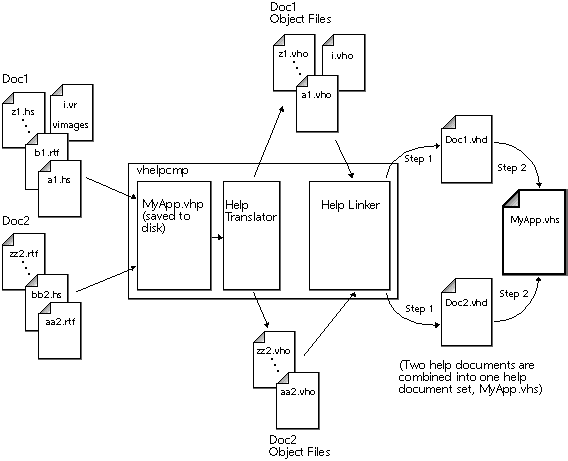
Interactive mode opens the Help Compiler Window and the Help Project Window. Use these windows to create and build help documents sets.
Stand-alone mode invokes the compiler from the command line without any interactive editors or windows. Stand-alone mode is useful for quickly updating changes to a help project and also allows the project to be incorporated into a makefile for automatic builds. Note that a project must be created in an interactive session before it can be built in stand-alone mode.
The command-line for starting the Galaxy Help Compiler is:
option represents any of the user-interface or stand-alone options listed in Table 6 and Table 7. Options available to any Galaxy application can also be used. Refer to the "Preference Manager" in the Galaxy Application Environment Programmer's Guide for details.
specification represents any of the option specifications listed in Table 7.
Starting the Galaxy Help Compiler
You can use the Galaxy Help Compiler in interactive or stand-alone mode. Command Line Options
Command line options should be specified as appropriate for your platform. If no stand-alone options are specified, then the compiler opens in interactive mode.vhelpcmp [[filename.vhp...] [[-option [specification]]...]]
filename.vhp... specifies optional help project files to open for editing. One or more file names can be specified on the command line (the .vhp extension must be included). If no file names are specified, an "empty" Help Project File Window with the name New0.vhp opens.
| UI Option [Specification] | Summary |
|---|---|
| -face face | Specifies a typeface for text. |
| -font font | Specifies a font for plain (non-bold) text. You can use any font available on your system. |
| -nomenucolor | Do not colorize the menu bar in Motif look-and-feel. |
| Stand-alone Option [Specification] | Summary |
|---|---|
| -build set.vhs "Set Name" doc.vhd [doc.vhd...] | Collects a group of document files into a help document set file (set.vhs). The help document set is given the name Set Name. |
| -buildDocSet filename.vhp | Constructs a help document set without invoking the user interface. filename.vhp is a previously created help project file. The extension .vhp must be specified. |
| -compile filename.ext ... | Translates the specified help source files into help object files (using the same basename as the source files: filename.vho). ext must be an .hs, .rtf, or .vr file. Any combination of help source files can be specified. Currently, there is no checking for name collision (.hs, .rtf, or .vr files with the same filename). The object files are created in the same directory as the source files. |
| -compileAllSources | Forces all files to be compiled rather than looking at their out-of- date status. Used only with buildDocSet. |
| -dumptags resfile.vr outtextfile | Writes the resource tag names and related information for objects resfile.vr to the text file outtextFile. The resource tag names can be used to provide context-sensitive help in help source files. |
| -help | Display options for using the help compiler. |
| -link doc.vhd "Doc Name" obj.vho [obj.vho...] | Links the specified help object files into a document file (doc.vhd). The document is given the name Doc Name. There is a limit of 55 files in a document, but this limit is not checked. |
| -version | Displays version information about the Galaxy Help Compiler. |
- To start the Galaxy Help Compiler in interactive mode:
- On platforms that use a command line, type:
- vhelpcmp [filename.vhp...]
- Press Return or Enter.
- The Help Compiler Window and Help Project File Window open, as shown in Figure 10 and Figure 11. These figures show the windows that open if the project file vdrawres.vhp is specified.
- or:
- Run the Galaxy Help compiler executable using the conventions of your
platform.
- On platforms that use a command line, type:
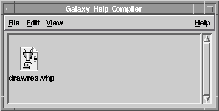
Figure 11. Help Project File Window
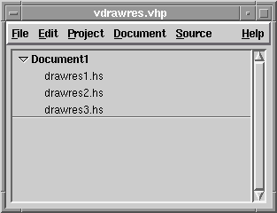
Stand-alone Mode
For information on running the help compiler in stand-alone mode, refer to "Compiling Help from a Command Line". Displaying Help Project File Icons
You can display help project files in the Galaxy Help Compiler Window by icon or by name. When viewed by icon (the default), an icon appears above the name of the resource file. When viewed by name, a small icon appears to the left of the file name. You can also display the full pathnames of help project files.
Quitting
- To quit the Galaxy Help Compiler:
- Select Quit from any File Menu in the Galaxy Help Compiler.
- If you have not made any changes or have already saved your changes, the compiler exits and any open windows close.
- If you have made changes but have not saved them, a confirmation dialog appears, asking if you want to save changes before quitting. Select the appropriate confirmation button in the confirmation dialog.
- This confirmation dialog may vary, depending on your look-and-feel.
- Select Quit from any File Menu in the Galaxy Help Compiler.
Building online Help
The following steps are necessary to create a help document set:
- Create a help project.
- Organize the documents in the help project file.
- Compile (update) the help project.
- Correct any errors and recompile.
- NOTE: When building online help in stand-alone mode, help projects are not
always necessary. For more information, refer to "Compiling Help from a
Command Line".
Working with Help Projects
Help projects contain one or more help documents which together form a help document set. Each help document contains one or more help source files. The contents of a help project file are displayed in a Help Project Window, as illustrated in Figure 12. For more information on help documents, refer to "Working with Help Documents".
Figure 12. Help project in Help Project Window
NOTE: The path to the project file is also used when generating .vhd and .vhs
files. If a newly created project has not been saved, then the path to your
user directory is used when generating these files. The path to your user
directory may vary, depending on your Galaxy installation.

Contents of a Galaxy Help Project
A Galaxy help project contains the following types of files. Each type of file in a help project is designated by its extension.
Note that the help document set should have the same base name as the application it provides help for. Additionally, the base names of help source files should be unique. This is because the base name is used to generate the name of the corresponding help object file. (For example, the files overview.rtf and overview.hs are both translated into overview.vho.)
Creating, Saving, and Opening Help Projects
NOTE: Use the Save As... option from the File Menu to rename a help project or
write it to another location.
NOTE: When opening a help project, the compiler checks to see if there are any
current object files for source files in the project. The compiler places a
check next to any source file that has a current object file. If a check is
not displayed next to a source file in the project, then the object file for
the source file is either out of date or missing. For more information on
current object files, refer to "Updating a Help Project".
Project Information Window
Each help project file generates a help document set. The title and filename for the document set is specified in the Project Information Window which is available from the Project Menu. Figure 13 shows the Project Information Window for a typical help project.
Figure 13. Project Information Window
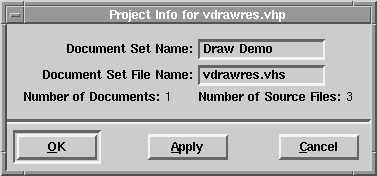
If you do not specify a document set file name, the compiler constructs the file name based on the project file name. Do not specify a pathname here¯the document set is saved using the path to the project file.
During compilation, the help compiler generates a help document file (with the extension .vhd) for each document in a help project. The title and file name for the document are specified in the Document Information Window. For details on the Document Information Window, refer to page 65.
The Project Information Window contains the following components:
Document Set Name
Specifies the title of a help document set. (At this time, the document set title is not used by Galaxy Help Services.) Document Set File Name
Specifies the file name for a help document set, which must be a valid operating system file name. Help document set file names end with a .vhs extension. If you do not specify the extension, it is automatically added to the specified name. Number of Documents
Indicates the number of documents in your project. You cannot edit this field. Number of Source Files
Indicates the number of source files in your project. You cannot edit this field. Confirm Buttons
Apply editing changes made in the Project Information Window. These buttons may vary, depending on the look-and-feel of your system. Working with Help Documents
A Galaxy help project represents a help document set that contains one or more documents. Each document can contain up to 55 help source files. Source files can be in help syntax format (.hs files), RTF format (.rtf files), or Galaxy resource files (.vr files) containing Galaxy images. Galaxy Help Services does not limit the number of documents in a help project file.
A file chooser appears.NOTE: On some platforms the default file chooser is the native file chooser for
that platform. On others, the Galaxy File Chooser is the default file
chooser.
NOTE: You may want to use the Filters option in the file chooser to display the
type of source file you want to add. Options are available for .hs files,
.rtf files, and .vr files.
NOTE: Removing a document removes all the source files contained in the
document.
Rearranging Contents of a Help Project
The order of documents and source files in a project determine the order in which the help entries are displayed by the Galaxy Help Server. The order of help documents and help entries follows the order of the help source files in the help project, except that child entries are always displayed after their parents.
To rearrange documents or source files in a help project, select the document or source file you want to move, and drag it to a new position in the project. Note that you cannot move source files or documents across different projects.
Document Information Window
The help compiler generates a help document file with the extension .vhd for each document in a help project. The title and filename for the document is specified in the Document Information Window, which is accessed from the Document Menu. Figure 14 shows the Document Information Window.
Figure 14. Document Information Window
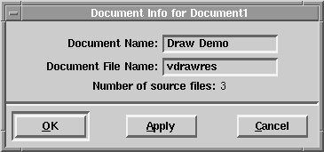
The title can be any literal string, including spaces and special characters. However, if a document file name is not specified, the compiler generates a file name from the document title. The compiler removes spaces and special characters in the title to form a valid file name.
In Visix help syntax, the document title is used to specify an external link to a document.
You should provide unique document names to each document in a document set. This will ensure that any external links to a document are correctly resolved.
If you do not specify a file name, the compiler constructs the file name based on the document name. Do not specify a pathname here - the document file is saved using the path to the project file.
Place your images in a resource file and add this resource file to your document using the procedure for adding source files. The compiler extracts the images from the resource file when creating the help document. The help compiler treats the resource file containing images as a help source file and counts it toward the 55 source file limit.
Galaxy Help Services provides several default images you can use in help documents. You do not need to add default images to a help document. The compiler automatically links any specified default image into the document.
Figure 15 shows a resource file containing images for a help document. The resource file was created with the Visual Resource Builder.
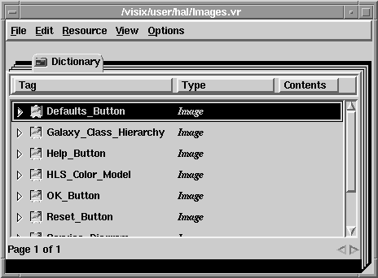
Images placed in the Default dictionary are displayed under all look-and-feels. If an image is at the top-level of the resource file, it is displayed on all platforms.
Figure 16 shows a resource file specifying platform-specific images for a help document. The image with the tag name "Sample Image" is at the top-level and will be displayed on all platforms. This image could also have been placed in the Default dictionary. The images with the tag name "Laf-specific Image" are all placed in look-and-feel dictionaries. The help server displays the appropriate "Laf-specific Image" image for the platform on which it is running.
Figure 16. Conditional specification of images in an image resource file
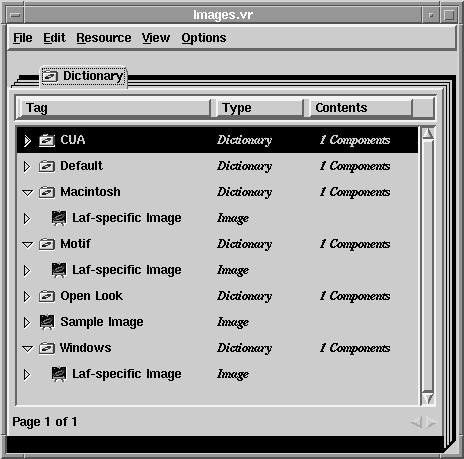
When updating a project, the help compiler checks to see if any help object files are current, and only generates new ones if necessary. A help object file is current if its timestamp (time and date of creation) is more recent than its corresponding source file.
Figure 17 shows a Help Project Window with the results of a successful compilation.
Figure 17. Project File Window showing results of compilation
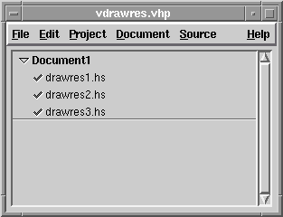
You may want to force recompilation of help projects that were built with a previous version of the compiler. You should also force recompilation whenever the current status of a project is in question.
You can use operating system commands to delete object files, or you can use options from the help compiler. The following procedures show you how to use the Galaxy Help Compiler to remove object files and force recompilation.
Figure 18. Compiling Queue Window
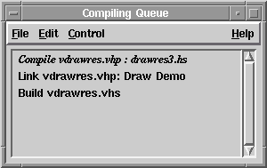
You may want to remove steps from the compiling queue if you know that one or more source files that previously compiled successfully now have an error and will not compile. Removing the steps to compile these source files forces the compiler to link with the previously generated object files. You may also want to remove steps from the compiling queue simply to abort the process.
Figure 19. Compiling Status Window
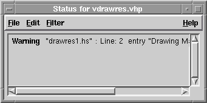
For each message reported, the Compiling Status Window lists the type of the message and the source file and line number responsible for generating the message. When the steps in linking are listed, the document and step number are reported. You can use the messages displayed in the Compiling Status Window for debugging your help source files.
You can save, sort, and filter the messages in the Compiling Status Window. If the Compiling Status Window is closed (or not visible), you can reopen it.
The Document Information Window contains the following components:
Document Name
Specifies the title of a help document. When providing online help for your application, the Galaxy Help Server displays the title of a help document in the Table of Contents. Document File Name
Specifies the file name for a help document, which must be a valid operating system file name. Help document file names end with a .vhd extension. If you do not specify the extension, it is automatically added to the specified name. Number of Source Files
Indicates the number of source files in your document. You cannot edit this field. Confirm Buttons
Applies editing changes made in the Document Information Window. These buttons may vary, depending on your current look-and-feel. Adding Images to a Document
You can add images to a help document using the Galaxy Help Compiler; however, you must first convert any image you add to a Galaxy vimage. Use the Visual Resource Builder to convert or create images in this format. The name of an image must match the argument to the @image command that references the image in the help syntax source file.NOTE: Use any valid operating system file name for the resource file containing
images, but to avoid name collision do not use names that match the name
of any help source file. For example, the resource file images.vr and the
help source file images.hs are both translated into the object file
images.vho.
Figure 15. Image resource file
Specifying Images for Different Look-and-Feels
You can specify images to display in a help document according to the look-and-feels available to your users. This is useful if you want to include screen shots or other images that are platform-specific. To include platform-specific images your image resource file needs to have a separate dictionary for each look-and-feel. The resource tag names of the look-and-feel dictionaries are:
Within each look-and-feel dictionary, place the image you want displayed when that look-and-feel is running. Note that the corresponding images in each dictionary must have identical names since they are all being referenced by one @image command in the help source file. Updating a Help Project
Updating a help project creates a help document set for your help project. The help compiler translates the help source files into help object files, then links the object files into help document files. Finally, the help document files are built into a help document set.
If the compiler successfully creates an object file for a source file, it places a check next to the source file in the Help Project Window. If the compiler encounters an error and cannot create an object file, it places an "X" next to the source file.
Forcing Recompilation
You can force recompilation of a project by deleting the object files and updating the project. You can also force a partial remake by removing only some of the object files before updating the project.
NOTE: After successfully building, testing, and implementing a help document set,
you may want to remove the object files to conserve disk space.
Updating Individual Source Files
You can update editing changes to one or more source files without having to rebuild a whole document set. To do this, use the Update File option from the Source Menu.
NOTE: Updating individual files does not link them into the help document.
Update the project when you want to incorporate the newly built
objects into the document set.
The Compiling Queue Window
The Compiling Queue Window, shown in Figure 18, is displayed when you update a help project file. It lists the steps necessary to compile and link your project. As each step is completed, the compiler removes the completed step from the Compiling Queue Window. You can pause compilation and remove additional steps from the compiling queue from this window.
The Compiling Status Window
The Compiling Status Window, shown in Figure 19, reports the status of your help project as it is compiling. This window only opens if messages occur during compilation. Depending on the preferences selected in the Preferences Window, errors, warnings, information, and/or noise messages are generated. By default, errors and warnings are reported. For information on setting preferences, refer to "Setting Compiler Preferences".
NOTE: This option does not affect the type of messages generated by the
compiler. It only specifies which messages to display. Use the Preferences
Window to specify the type of messages generated during compilation.
Types of Messages
The Compiling Status Window reports four types of messages: Errors
The compiler reports errors when either translating or linking failed, and no document set is built. Use the error messages to help find the error and fix it before updating the project again.
Warnings
When warnings are reported, the document set is built, but it may not perform as expected. Use the warning messages to determine if any remedial action needs to be taken.
Information
Information messages report details of the translation and linking process. These messages do not indicate a problem with compilation.
Noise
Noise messages report further details of compilation. As with information messages, noise messages do not indicate a problem with compilation.
Setting Compiler Preferences
The Galaxy Help Compiler has preferences to specify the level of messages generated when updating a project and for setting the compiling/linking timeslice. Use the Preferences... option from the File Menu to open the Preferences Window. The Preferences Window is displayed in Figure 20.
Figure 20. Help Compiler Preferences Window
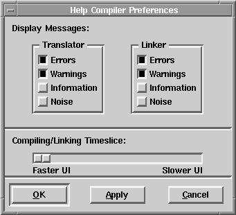
When using the compiler in stand-alone mode, you cannot specify the level of displayed messages. In stand-alone mode only errors and warnings are displayed.
To set the compiling timeslice, adjust the slider bar in the Preferences Window.
Specifying Display Messages
To specify the level of messages displayed during translating and linking, select the appropriate toggles in the Display Messages section. Refer to "Types of Messages" for a description of these messages. By default, Errors and Warnings are selected. Compiling/Linking Timeslice
The help compiler does internal multitasking, dividing its time between the user interface (UI) and compiling. A faster UI means that compiling is slower, but the UI is more responsive. A slower UI means that compiling is faster, but the UI may take longer to respond to user actions. Generating Resource Tags
To provide context-sensitive help to an application, you need to reference resource tag names from the application's resource file. The Dump Resource File Tags command prints a text file of all the resource tags in an application's resource file.
Note that you can also use the dumptags option to the compiler in stand-alone mode to print resource tags for an application's resource file. For details on specifying stand-alone options, refer to the section "Stand-alone Mode".
Compiling Help from a Command Line
Stand-alone mode invokes the compiler from the command line without any interactive editors or windows. It is useful for quickly updating changes to a help project and also allows the project to be incorporated into a makefile for automatic builds.
You cannot specify the level of messages generated by the compiler for stand-alone mode - only error and warning messages are generated. Error and warning messages can be saved to disk on platforms that allow redirection of the output.
The following options are available from stand-alone mode. Refer to "Command Line Options" for details on specifying stand-alone options.
compile
The compile option creates help object (.vho) files from help source files. Any combination of .hs or .rtf source files can be specified with this option.
link
The link option creates a help document (.vhd) file from help object (.vho) files.
build
The build option creates a help document set (.vhs) file from help document (.vhd) files.
buildDocSet
The buildDocSet option creates a help document set (.vhs) file from a help project (.vhp) file. Use the -compileAllSources option with this option to force compilation regardless of the out-of-date status of any object files.
compileAllSources
The compileAllSources option can only be used with the buildDocSet option. compileAllSources forces compilation regardless of the out-of-date status of any object files.
Command Line Examples
When building a help document set in stand-alone mode, first compile the source files into help object files. Next, link the object files into help documents. Finally, link the help documents into a help document set. Example 18 illustrates how to build a help document set in stand-alone mode. (This example illustrates command line options for the UNIX platform - be sure to specify options appropriately for your platform.)
Example 18. Building a help document set from the command line
% vhelpcmp -compile *.hs
% vhelpcmp -link myapp.vhd "My App" *.vho
% vhelpcmp -build myapp.vhs "My App" *.vhd
Note that in Example 18, you do not need to use a help project to build the help document set. However, you can build a help document set from a help project file in stand-alone mode by specifying the buildDocSet option. The help project file must have been previously created in an inter-active session with the compiler. Example 19 illustrates using the buildDocSet option.
Table of Contents
Switch to Another Document
Need help? Contact Visix.